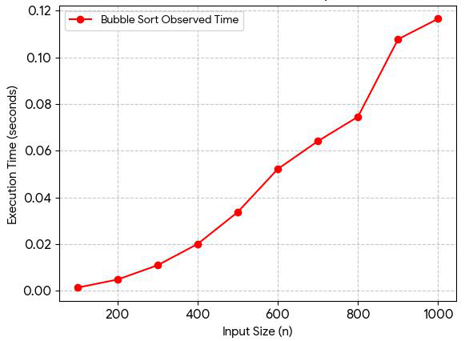

Unit 3
Module: Launch into Computing
Algorithm Analysis and Implementation
(Bubble Sort Algorithm in the Python programming language)
by Eziuche Emmanuel
Bubble Sort is a comparison-based sorting algorithm that organizes a list by repeatedly evaluating and swapping adjacent elements that are out of order until the entire sequence is correctly positioned (Cormen et al., 2022).
code </>
def bubble_sort(arr):
n = len(arr)
for i in range(n):
# After each pass, the largest element "bubbles" to the end
for j in range(0, n - i - 1):
if arr[j] > arr[j + 1]:
# swap
arr[j], arr[j + 1] = arr[j + 1], arr[j]
return arrTime complexity analysis
An algorithm's time complexity dictates how its computational execution time grows relative to an increasing input size, denoted as n (Goodrich, Tamassia and Goldwasser, 2013). While Bubble Sort is one of the most conceptually straightforward sorting mechanisms, it represents one of the least computationally efficient designs (Cormen et al., 2022). Its performance profiles are classified as follows:
- Worst-Case Complexity: O(n²) — This occurs when the input array is sorted in exact reverse order. The algorithm is forced to execute a comparison and a swap for every individual pair, yielding an n × n operational overhead (Cormen et al., 2022).
- Average-Case Complexity: O(n²) — For randomized data distributions, the expected number of comparisons and internal shifts remains inherently quadratic (Goodrich, Tamassia and Goldwasser, 2013).
- Best-Case Complexity: O(n) — If optimized with an internal boolean flag to monitor swap activity, the algorithm can terminate after a single verification pass if the dataset is pre-sorted.
- Space Complexity: O(1) — Bubble Sort is strictly an "in-place" algorithm, requiring a constant, fixed amount of auxiliary memory space regardless of the dataset's scale.
A graph showing performance (time complexity) for different input sizes

The empirical performance graph visualizes a clear quadratic growth trajectory; as the input size (n) scales upward, execution time accelerates rapidly along a parabolic curve. For instance, when the underlying dataset expands from 200 elements to 1,000 elements, the measured execution time rises disproportionately from approximately 0.005 seconds to over 0.116 seconds. This behavior highlights the operational toll of the nested loops effect. Because every individual element must be exhaustively compared against its neighbors through overlapping iterations, the computational workload scales quadratically, demonstrating why Bubble Sort is fundamentally unsuited for large-scale data applications.
Analysis report
Bubble Sort algorithm's functionality
The Bubble Sort algorithm is a fundamental, comparison-based sorting technique that structures disordered data through sequential iteration. It operates by systematically stepping through an array, comparing adjacent data pairs, and swapping their positions if they violate the intended order. This basic procedure is executed across multiple cumulative passes until a full iteration occurs with zero adjustments, causing the largest unsorted values to incrementally bubble up to their final, stable terminal positions (Cormen et al., 2022).
Efficiency for small vs. large datasets
The real-world utility of Bubble Sort is bounded entirely by dataset scale, an operational reality governed by its quadratic O(n²) time complexity (Goodrich, Tamassia and Goldwasser, 2013). For small datasets such as indexing a brief inventory of specialized surgical tools or organizing a localized cohort of on-duty theatre staff, the processing latency is minimal and measured in microseconds, making its algorithmic inefficiency virtually unnoticeable. However, when applied to expanding datasets, its performance collapses. Due to its deeply nested looping architecture, doubling the input size quadruples the necessary execution steps, rendering it entirely obsolete for handling large-scale arrays or live, continuous streams of data.
Comparison of Bubble Sort and Quick Sort and their real-world use cases
In contrast to the brute-force mechanics of Bubble Sort, Quicksort utilizes a highly advanced, recursive "divide-and-conquer" framework (Cormen et al., 2022). By establishing a strategic pivot element and partitioning the surrounding array into independent, lesser and greater sub-arrays, it bypasses redundant comparisons to achieve an optimal average-case time complexity of O(n log n).
code </>
def quicksort(arr):
if len(arr) <= 1:
return arr
pivot = arr[len(arr) // 2]
left = [x for x in arr if x < pivot]
middle = [x for x in arr if x == pivot]
right = [x for x in arr if x > pivot]
return quicksort(left) + middle + quicksort(right)Within the domain of Artificial Intelligence in healthcare (specifically in my area of interest regarding automated anaesthetics and patient surgical flow optimization) this dramatic performance variance is intrinsically tied to system safety and clinical integrity. Quicksort delivers the predictable, logarithmic scalability needed to manage multi-theatre scheduling configurations and instantaneous patient monitoring systems without systemic lag. Ultimately, while Bubble Sort remains an important educational framework for studying fundamental control structures and logical conditions, Quicksort represents the baseline computational standard required to deliver reliable, responsive, and safe clinical AI applications (Walton, 2024).
Comparison table
| Feature | Bubble Sort | Quick Sort |
|---|---|---|
| Time Complexity (Best) | O(n) | O(n log n) |
| Time Complexity (Average) | O(n²) | O(n log n) |
| Time Complexity (Worst) | O(n²) | O(n²) (rare with good pivot choice) |
| Space Complexity | O(1) | O(log n) (due to recursion) |
| Logic | Simple, comparison-based | Divide-and-conquer |
| Practical Use | Small or nearly sorted lists | Large datasets, real-world sorting |
References
- Cormen, T.H., Leiserson, C.E., Rivest, R.L. and Stein, C. (2022) Introduction to Algorithms. 4th edn. Cambridge, MA: MIT Press. Available at: https://mitpress.mit.edu/9780262046305/introduction-to-algorithms/ (Accessed: 13 May 2026).
- Goodrich, M.T., Tamassia, R. and Goldwasser, M.H. (2013) Data Structures and Algorithms in Python. Hoboken, NJ: John Wiley & Sons. Available at: https://www.wiley.com/en-us/Data+Structures+and+Algorithms+in+Python-p-9781118290279 (Accessed: 15 May 2026).
- Walton, D.J. (2024) Culturally Responsive Computing: An Introduction into Computer Science, Security, and Technology. Boston, MA: ROTEL. Available at: https://rotel.pressbooks.pub/culturally-responsive-computing/ (Accessed: 18 May 2026).